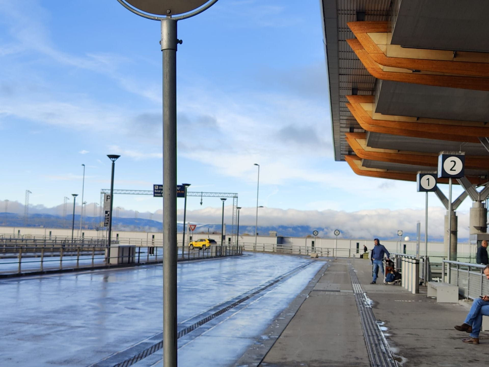
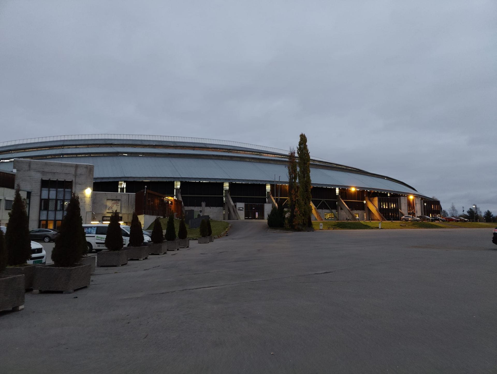
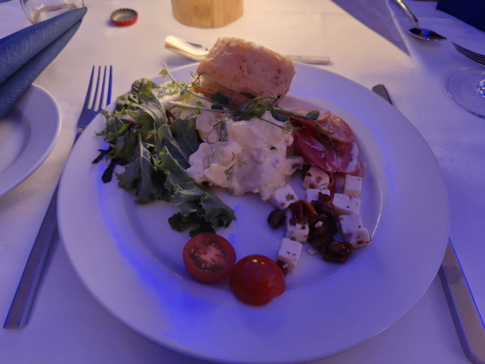

Foreword
Over the past 2 weeks (23-30 October), I was fortunate enough to represent Singapore at ECSC 2023 together with 9 other NUS Greyhats members. We got to go overseas as this was an on-site CTF and NUS School of Computing was generous enough to grant us a (mostly) sponsored trip. It was quite an experience for me as I had truthfully never done Attack/Defence CTFs before and this was only my second time in Europe as well.
ECSC in Hamar, Norway 🇳🇴
ECSC is one of the biggest cybersecurity competions in europe where top cyber talents from each participating country will meet to network, collaborate and finally compete against each other. Contestants are challenged in solving security related tasks from domains such as web security, mobile security, crypto puzzles, reverse engineering, and forensics and in the process collect points for solving them.
NUS Greyhats represented Singapore as a guest team appearing at ECSC 2023, alongside countries like Canada and United States. There were a total of 34 teams present at ECSC 2023 including all guest teams and it was a sight to behold as every team gathered in the Vikingskipet (Hamar Olympic Hall) to battle it out with each other over 3 days of interesting and slightly excruciating challenges. We got a chance to tour Hamar as well as Oslo in our time in Norway and try out the different local flavours, all while meeting and connecting with all the talented young cyber talents from the participating European countries. In particular, I felt that team Netherlands, Germany, Denmark and Switzerland stood out to me as they were constantly on the top of the leaderboards during the competition. Everyone present was extremely talented and I’m definitely glad that I got to meet them.
Day 0
 View from the airport in Oslo, Norway (taken the following morning)
Our flight brought us to Norway about 10 hours early and we landed near midnight a day before the competition, which meant we had to book an extra night of stay at an airport hotel. This was the first blast of cold that hit us since we had been experiencing ever increasing temperatures in Singapore, and it felt pretty amazing. We pretty much just hurried to our hotels and prepared for the actual Day 0 of the competition, where there were some pre-competition events lined up for us.
We set off for Hamar the first thing in the morning from the airport. We met the Danish national team on our way there (they were taking the same train as us!) and had some small talk with them. After reaching Hamar, we checked into the hotel that was arranged for us (but not sponsored by ECSC 😞) and had some time to look around before reporting to the competition venue in the evening for the opening event. We briefly explored the area in Hamar around our hotel and scrambled to buy some extra adapters for our use during the competition. The opening event was quite interesting, watching all the various teams’ introduction videos and also gave us an interesting (and rather hilarious too, thanks to all the teams’ amazing videos) look into European banter that I’ve only ever read online and never seen in person. Afterwards it was back to our hotel rooms and getting ready for the competition with mostly just some mental prep.
Day 1
 Amazingly large venue, looks grand even from the outside
Day 1 was a jeopardy-style CTF where every team competes on the leaderboard by solving various challenges in various categories. If I have to be honest, I was quite disappointed with Day 1 as my area of expertise (if you could call it that) did not have much interesting challenges available and were mostly very straight-forward, so I spent the rest of the competition trying to help out with the other challenges (without really getting anywhere). This was the day we saw Denmark, Germany and Netherlands full clear the challenges which was honestly pretty amazing. We had catered food (cursed cold burritos) for lunch as well as dinner (hotel food, thank god) and the rest of the night after the competition was spent getting ready for Day 2, which would feature an Attack/Defence competition.
Day 2
Day 2 was Attack/Defence where every team had the same few vulnerable services hosted on their respective teams’ provided servers. The goal of Attack/Defence is to patch your own services while exploiting other teams’ services to retrieve the flag, which is planted into every teams’ service per tick (~3 mins) by the organizers.
As all the ECSC participants would know, this day was a bit of a disaster because of many things going wrong. Firstly, the competition had to be delayed because some teams figured out how to DDOS the infrastructure during the pre-competition trial run, so the organizers had to take extra time to try to fix some things. The services were also not running properly during the supposed grace period which further delayed the start of the competition, and this extra time allowed many teams to sweep the network and prematurely figure out other teams’ IP addresses. This also meant people were already able to test out their exploits before the grace period ended.
At one point, due to the badly-coded services (yes, they were meant to have vulnerabilities, but they didn’t need to be inefficient), the server was slowly getting overloaded as the competition ran on. As this day was supposed to feature a 10-hour Attack/Defence competition, the fact that the infrastructure was starting to show bad signs around halfway through the competition was not good. Teams also figured out how to DDOS other teams’ services such that they wouldn’t be able to get their services to run. In most Attack/Defence competitions according to what I heard from my teammates as well as other participants, this was not meant to be possible. But the organisers couldn’t really figure out how to prevent it and the competition was already well underway, so they ended up allowing it.
However, thanks to the participants, the day was still interesting as everyone united to still have fun in the event Discord server as well as on-site (clapping, chanting etc.). At one point, because most services couldn’t stay up,both due to the infrastructure pretty much breaking down as well as everyone DDOSing each other, Team Germany managed to delete their service and host a Minecraft server in place (while the competition was still running), which was quite hilarious.
This was a first for me for Attack/Defence competitions and I’m glad that while it wasn’t the best experience in the sense of the competition, it was at least a fun one.
Day 3
The final day of the competition was also, like Day 1, a jeopardy-style CTF. This day featured some interesting challenges which was a relief and we set to work. We managed to do much better on this day and even achieved a top 10 on the overall leaderboard, 2nd place among the guest teams. Although there were still some hiccups, like one of the challenges basically being unattemptable for most of Day 3, it was still overall a fun day. After the competition ended, it was time to await for the results.
We did not expect much as the other guest teams were also extremely strong and the European teams were a lot stronger than we had expected (a pleasant surprise, honestly). To our surprise, as they announced the guest team results, Singapore came in 3rd place among the guest teams! We went on stage to collect our medals and there was a grand catered dinner (buffet-style) afterwards featuring some delectable dishes from all across Europe.
After this, the participants held a massive impromptu afterparty in the hotel (with lots of alcohol) and we got the chance to go around and connect with various cybersecurity students and professionals. We were actually slightly taken aback because we were so used to Singaporean males having to undergo 2 years of national service that we forgot the participants we were facing off, around the same age as us, were actually mostly already working.
 Fancy looking appetizer
Afterword
Overall, this was an amazing experience for me as I experienced many firsts, and this was also only the second time I’ve been to Europe. We got some time to explore around Norway and even Paris, France during our layover on our flight back afterwards and I felt like I had gained not only insights on these large cybersecurity competitions but also met some of the strongest young hackers in Europe. This was a blessed experience and I would definitely experience it all over again in a heartbeat.
Special Thanks
- NUS and NUS School of Computing
- for sponsoring our trip
- NTNU
- for hosting ECSC 2023
- All my amazing teammates in NUS Greyhats
- for being a part of this experience and making it a memorable one